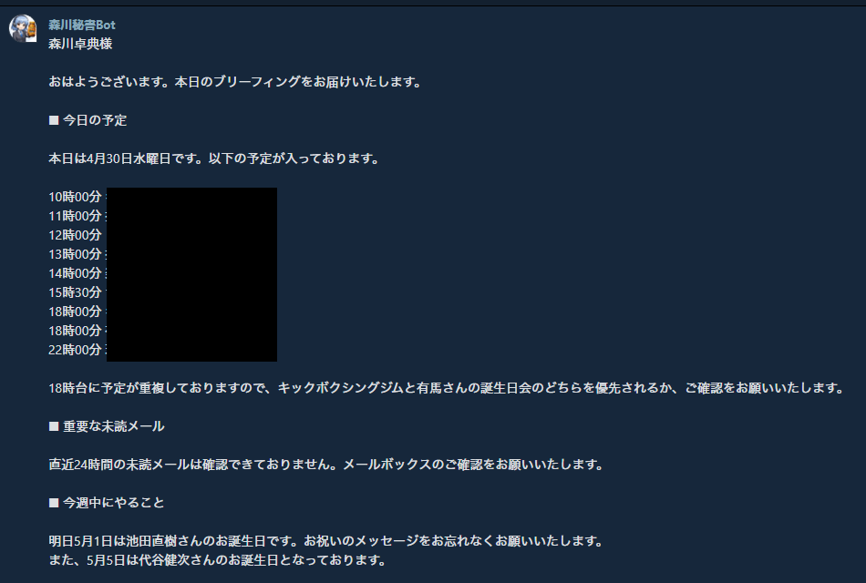

報告ツールの画面
毎朝9時にチャットワークに届く、実際のブリーフィングメッセージ
チャットワーク — AI管理グループ
🔍 クリックで拡大

🔍 クリックで拡大
※ 個人情報・機密情報にはモザイク処理済み
✕

4つのパーツ
このツールがどう動いているかの構成
⏰
トリガー
いつ動くか
n8n Cloud — スケジュール実行
毎朝9時に自動起動。定刻に動くことで、朝の始業前に必ずブリーフィングが届いている状態を作る。
📂
ソース元
データの場所
📧 Gmail
直近24時間の未読メールを取得。複数の会社のメールを1つのGmailに集約している。
📅 Googleカレンダー
1週間分の予定を取得。誕生日・重複スケジュールなども把握できる。
🤖
処理する場所
データを加工する場所
n8n Cloud + Claude API
n8nがGmail・カレンダーのデータを取得して集約。ClaudeがAIとして要約・重要度判断・今週のタスク提案を作成する。
💬
届ける先
完成レポートの送り先
チャットワーク — AI管理グループ
毎日使っているチャットワークに届けることで、確認漏れがない。既存のワークスペースに専用グループを作成して運用。
自動化フロー
⏰
毎朝9時
→
📧📅
Gmail + Calendar
→
⚙️
n8n 集約
→
🤖
Claude API
→
💬
チャットワーク
工夫したポイント
作るうえで意識したこと・ぶつかった課題と解決
🔗
複数データソースを1つのブリーフィングに統合
メール（Gmail）とカレンダー（Googleカレンダー）という2つのデータを、n8nのAggregateノードで1つにまとめてからClaudeに渡す構成にした。これにより「今日の予定」と「重要メール」を別々に確認する手間がなくなり、朝の確認が1メッセージで完結する。
🤖
ClaudeにAIらしい判断をさせる
単純な転送ではなく、Claudeが重要度を判断して要約・提案まで行う構成にした。スケジュールの重複（例：同時刻に別の予定が入っているケース）や誕生日のある日には「確認してください」という形で能動的にアドバイスが届くようにした。
🔍
ぶつかった課題：メール取得エラーのデバッグ
朝のブリーフィングで「重要な未読メールの詳細情報が取得できておりません」というメッセージが続いた。最初はGmailのOAuth認証が切れたと判断したが、n8nでテスト実行するとGmailノードは正常に11件取得できていることが判明。
原因の特定プロセス
- 1.Gmailノード → 正常（11件取得できていた）
- 2.Googleカレンダーノード → 正常（予定データが届いていた）
- 3.ClaudeのInputを確認 → カレンダーデータのみでメールデータが見当たらない
- 4.Aggregateノードの設定に問題がある可能性を特定
各ノードのInput/Outputを1つずつ追うことで、「どこで情報が落ちているか」を特定できた。エラーメッセージだけを見るのではなく、フロー全体をステップごとに確認することが重要だと学んだ。
📐
完成形のHTMLを先に作ってからAIに渡した
講義で学んだ「完成形の絵から作る」を実践した。出力フォーマット（今日の予定・重要メール・今週中にやること・一言コメントの4セクション）を先に設計してClaudeのプロンプトに盛り込んだことで、毎回安定したフォーマットのブリーフィングが届くようになった。
月額コスト
ほぼ無料で動いている
| ツール | 費用 |
|---|---|
| Claude API | 〜100円/月 |
| n8n Cloud | 無料 |
| Gmail / Googleカレンダー | 無料 |
| チャットワーク | 既存費用のみ |
| 合計 | 月100円程度 |
今後の拡張予定
フェーズ1が動いたので、次のステップへ
✓ 完成
朝のブリーフィング
毎朝9時に予定・メール・タスク提案を自動送信
→ 次のステップ
Zoom議事録の自動作成
Zoom会議の文字起こしをClaudeが整形してNotionへ保存
将来
メール返信の下書き自動生成
重要メールへの返信下書きをGmailのドラフトに自動作成